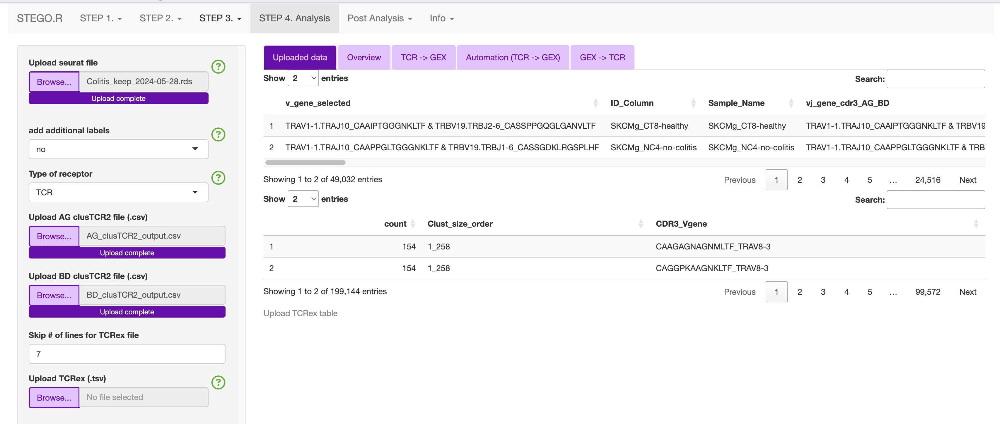

Step 4. Analysis
Note
Under active construction
This section will include example analyses depending on the type of data present.
Application structure
The analysis section is divided into several sub-sections.
Uploaded files
Overview
TCR -> GEX
Automation (TCR -> GEx)
GEx -> TCR
Uploaded files
There first tab will show in the side panel the files that can be uploaded.
Side bar
To streamline the analysis, for this section you will only see the following:

This will include the following default files that can be uploaded: - Upload seurat file (.rds) - Upload AG clusTCR2 file (.csv) - Upload BD clusTCR2 file (.csv) - Upload TCRex (.tsv)
To make selecting the “Data source” and “Species”, there are functions to identify if the TCR-seq formattting is AIRR or not. The species is currently either human (hs) or mouse (mm) and based on the gene formatting of all caps (hs) or proper case (mm). The latter is needed as R is a case sensative language.
If you need additional identifiers for the analysis section, this can be added by switching “add additional labels” to “yes” and upload the “Update_labels.csv”.
ID |
Condition |
|---|---|
CD3_C1 |
colitis |
CD3_C2 |
colitis |
CD3_C3 |
colitis |
CD3_C4 |
colitis |
CD3_C5 |
colitis |
CD3_C6 |
colitis |
CD3_C7 |
colitis |
CD3_C8 |
colitis |
CD3_CT1 |
normal control |
CD3_CT2 |
normal control |
CD3_CT3 |
normal control |
CD3_CT4 |
normal control |
CD3_CT5 |
normal control |
CD3_CT6 |
normal control |
CD3_CT7 |
normal control |
CD3_CT8 |
normal control |
CD3_NC1 |
no colitis |
CD3_NC2 |
no colitis |
CD3_NC3 |
no colitis |
CD3_NC4 |
no colitis |
CD3_NC5 |
no colitis |
CD3_NC6 |
no colitis |
CD3_NC7 |
no colitis |
CD3_NC8 |
no colitis |
Main panel
Depending on what you have uploaded, the main panel will render several tables. The first table is of the Seurat object’s meta-data and you will see how it adds the additional labels after the “Sample_Name” column.
Uploaded example K409 Melanoma dataset
{kind=link}
Variable used for all analysis in the side bar
These drop down menues allow the user to change what is presented on the graphs and the analysis
The selected individuals = Sample Name (default)
Display by Selected Individual = no or yes. This is linked to the “Selected Individual” button.
Number of plot row = 2. This allows the user to select the number of rows to display as desired.
The “Split graph by:” button allows for some graphs e.g., Pie charts, to be split by this variable rather than the “Selected Individual”

The user can also select which variable to colour the graphs by with “Colour by:”
Additionally, the uder can also select the colouring Palettes that includes: “default”, “rainbow”, “random”, “heat.colors”, “terrain.colors”, “topo.colors”, “hcl.colors”, “one”
The “one” colour is linked to the “One colour”. Additionally all NA variable will be coloured the light grey #E5E5E5

For some of the functions, the user can restrict to “What individuals to include”
This includes both the - “Display one individual?” - “Display one individual”
For instance this is used to filter the TCR table in the clonal abudance section to more easily identify the most abundant cloens relative to a specific sample/individual based on the “selected individuals” button.

The user can also select the plot parameters that are relevant to the majority of the graphs
- This includes:
Axis number size - size of the numbered axis
Axis text size i.e., axis title
Legend text size
legend location (left, right, top, bottom or none)
Type of Font

Overview
- GEx
Percentage (Table)
UMAP of the annotation models
Pie chart
- TCR
UPSET plot (<31)
Line graph (clone tracking)
expansion (bar)
expansion (UMAP)
TCR-seq -> GEX
Each section has a summary table, UMAP, Heatmap, stats, dot-plot and over-representation.
Some of the secions also have unique features.
- Clonal abudance
Bar graph
Ridge and Violin plots (for a specific gene)
Exapanded
- ClusTCR
Motif
- Epitope
Load Epitope list
Automation (TCR -> GEX)
- Clonotype
Download public (bar graphs), summary table, dot plot for each public-like clone
Download private (single sample)
Can restrict based on the calculated priority 1/(sample total * total count)
- Cluster
- Download the motif, summary table, dot plot for each public-like and private clusters
A common cluster is TRAV1-2 TRAJ33
separate alpha and beta cut-offs
Priority: 1/(number of nodes * sample total * total count)
- Epitope/Annotation
with the epitopes find the associated epitopes from TCRex
Unselect “Add in Epitope data” to focus on the annotations. So, you can identify the TCR linked to specific annotation models (e.g., FunctionTcell)
GEx -> TCR
- Annotation
Under development
- Marker
Single marker
Dual marker
Example 1. Colitis dataset
In the zenodo repository we have uploaded the colitis dataset. This consis of 32 samples in the colitis dataset with the additon of the background data.